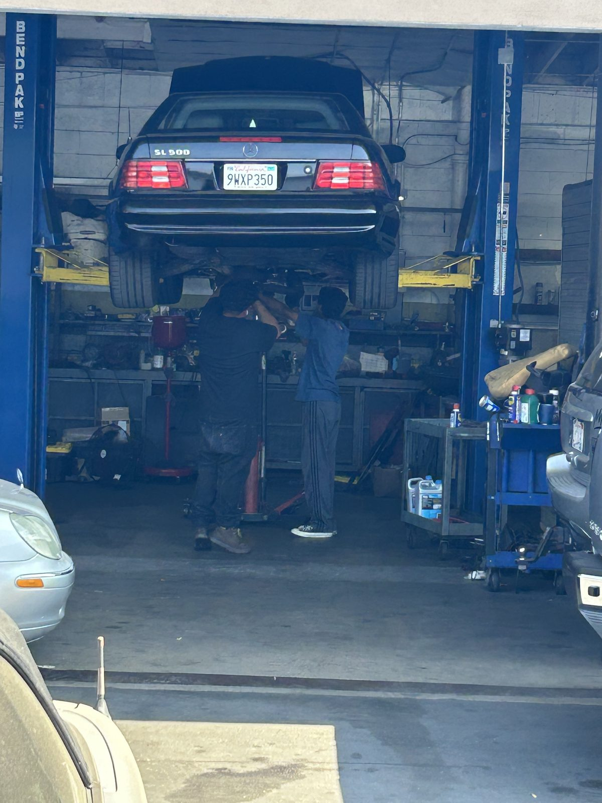

Working in my family garage gives me practical experience diagnosing vehicle systems, carrying out repairs, and seeing how mechanical assemblies work under real conditions. It complements my engineering interests and gives me a hands-on way to keep learning.